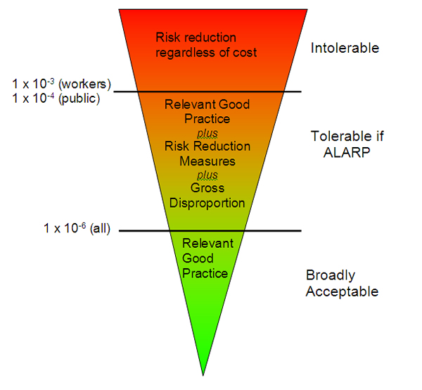
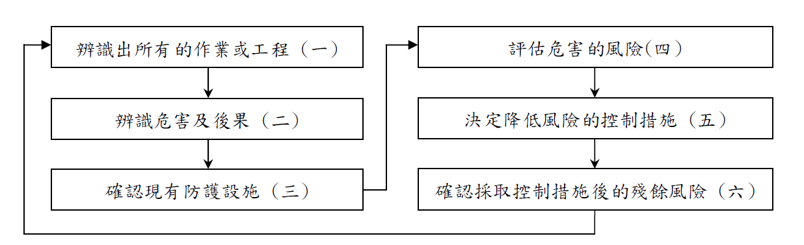

第五章 風險評估
甲種職業安全衛生業務主管課程
講師簡介
姓名：何明信
學歷：成大環醫所 、職安衛技師
經歷：檢查員30年 (製造、危機設、營造、化工職衛科、專委)
現職：114年退休
E-mail：msho7336959@gmail.com
1.教材內容
壹、前言
- 人類生活環境到處存有危害因素：能造成傷亡、財物損壞或健康影響。
- 風險評估是現代安全及健康管理的基礎，主要包含三個步驟：
- 危害辨識
- 風險評估
- 風險控制
雇主與產品製造者須遵守職業安全衛生法規，並正確理解「危害」與「風險」。
一、危害？
- 危害：一種能源或情況，具有潛在可能引致人體傷害、健康受損、財物毀壞或其組合。
- 三個重要元素：(?)
- 物品及行動（機器、物質、工作方法）
- 結果（傷害、健康受損、毀壞財物）
- 潛在危險
辨識危害需依靠觀察、專業知識與提問：「如果這樣做，會發生什麼？」
二、風險？
- 風險：危害事故發生的可能性 × 嚴重性。
- 數學式：風險 = 機率 × 損失。
常見風險分類
| 分類方式 | 類型 |
|---|---|
| 風險性質 | 純粹風險、投機風險 |
| 產生環境 | 靜態風險、動態風險 |
| 發生原因 | 自然、社會、經濟風險 |
| 損失對象 | 財產、人身、責任風險 |
風險認知與整合
- 危害辨識會產生不同程度的風險（主要、重要、一般）。
- 需對風險進行評級，優先處理主要的，次要的可容忍甚至不處理。(WHY ?)
- 整合性風險管理(IRM)結合保險與財務技術，管理可保風險、財務風險、作業風險。
英國HSE將風險分為：不可容忍、可容忍(ALARP)、不需考慮、無足輕重。(？)

危害辨識方法
- 目的：識別作業環境中的化學、物理、生物、人因及社會心理危害。
- 步驟：(限 化學性？)
- 確認使用物質與特性
- 了解健康影響（毒物學知識）
- 尋找暴露途徑（吸入、皮膚、食入）
可參考IPCS、IARC、UNEP-IRPTC等國際物質安全資料庫。
危害分類
- 基本三元素：(?)
- 工作場所特徵
- 接觸模式（頻率、量、時間）
- 危害評估與計量
- 沒有單一技術適用所有場所，需依目標、大小、產品種類選擇方法。
工作場所特徵 & 接觸模式
- 工作場所特徵：
- 不同部門、製程階段
- 密閉系統/開放系統
- 新廠設計時即辨識危害
- 接觸模式：
- 吸入、皮膚接觸、偶然食入
- 直接或間接暴露
- 暴露組概念（相同暴露群?）
危害辨識程式 (?)
評估與計量
- 參考流行病學、毒理學、臨床與環境研究
- 使用SDS（安全資料表），標明濃度、CAS號、TLV值
化學、生物及物理因子 (?)
- 化學物質：氣體、蒸氣、液體、氣膠（粉塵、煙、霧）
- 暴露評估：決定暴露量、頻率、持續時間
- 參考EN689 (CEN1994)
- 重視可呼吸性粉塵，必要時生物監測
職業衛生實施三方面 (?)
- 最初檢查：是否過度暴露 → 決定是否干預
- 追蹤監測：控制改動時監控效能
- 流行病學研究：高精確度定量暴露
歷史暴露數據應精準記錄以備將來分析
危害分析評估及量化 (半量化？)
可能性描述表
| 可能性 | 描述 |
|---|---|
| 很有可能 | 時常重複發生，預料之中 |
| 頗可能 | 多次發生 |
| 可能 | 有時發生 |
| 可能性極微 | 不大可能但可想像 |
| 幾乎不可能 | 或然率接近零 |
嚴重性
- 從無傷害到死亡，包括環境/財物損失。
- 需依每種危害特質判斷，不可全視為「嚴重」。
風險計算公式 (是這樣嗎?)
風險的法律定義是指某危害（危險）事故發生的可能性兼嚴重性，
計算式可寫成：(這一頁內容有問題？)
- 風險＝某危害事故發生可能性x某危害事故的嚴重性風險(Risk) ＝ 可能性(Likelihood) x嚴重性(Severity) (1)
嚴重性與危害及暴露時間有關，因此
- 嚴重性＝危害(Hazard) x暴露(Exposure) (2)
而暴露與濃度／能量／劑量及時間有關，因此
- 暴露＝濃度／能量／劑量(Concentration/Energy/Dose) x時間 (Duration) (3)
把程式(2)及(3)代入程式(1)
- 風險 ＝危害 x濃度／能量／劑量 x 時間 x 可能性 }(4)
Warning
留意這段話 (教材 p135)….. ，會被誤導…..
參、製程安全評估
(外洩中毒、火災、爆炸案件)
一、安全評估概述
- 重大工業災害（如毒氣外洩）促使各國制定標準：
- 歐盟《重大事故危害防範規則》
- 美國OSHA《高危險性化學物質製程安全管理標準》
- 目的：預防或減低因毒性、反應性、易燃、爆炸性物質外洩引起的危害。
二、製程安全資訊收集與分析
(一) 製程安全資訊
- 有害化學物質資料：毒性、暴露濃度、物理/反應/腐蝕/熱安定性等。
- 製程技術資料：流程圖、化學、最大存量、安全操作條件。
- 製程設備資料：材質、管線儀器圖、電器分級、緊急釋壓、通風等。
(二) 製程危害分析
- 系統化辨識重大潛在危害，分析因果關係，評估後果重要性。
- 考慮因素：歷史事故、工程/管理管制、設備配置、人為因素、控制失誤。
製程危害分析方法
| 方法 | 特點 |
|---|---|
| What-If | 腦力激盪，開放式問題 |
| 檢核表 | 簡易，但可能遺漏 |
| What-If/檢核表 | 合併兩者 |
| Hazop | 引導字系統化，完整定性分析 |
| FMEA | 設備失效模式分析 |
| 故障樹分析(FTA) | 量化找出機率最高因素 |
事業單位可選擇一種以上方法
三、安全評估工具與方法
(一) 初步危害分析
- 用於建廠初期或首次評估，找出重大危害(不深入)。
(二) 分析小組
- 包含：製程專家、熟悉方法人員、工業安全、維修、電機、文書等。
(三) 結果及建議
- 應記錄改善計畫，追蹤執行情況。
- 五年（或製程修改30日前）報請檢查機構備查。(審查能力？)
肆、結語
- 國內以往偏重工程技術，未整合管理。
- 製程安全管理：以管理制度為基礎，整合技術與人員，辨識、了解、控制潛在危害。
- 唯有整合性管理才能充分發揮安全技術的功能。 (？)
參考文獻： 1. 工業安全風險評估，王世煌，2002。 2. OHSAS 18001 / ILO-OSH 2001 等。
附件：風險評估作業流程
辨識所有的作業或工程
辨識危害及後果
確認現有防護設施（工程控制、管理控制、個人防護具）
評估危害的風險（可能性×嚴重性，等級判定）
採取降低風險的控制措施（消除→取代→工程→管理→ PPE）
確認控制後的殘餘風險 (定期監督)
記錄與傳達 (定期檢討)
附件：風險評估方法選擇考量
安全衛生法規要求（如危險性工作場所）
工作場所性質（固定/臨時）
製程特性（自動化、開發性）
作業特性（重複/偶發）
技術複雜度
例如：自動化製程 → Hazop, FTA；維護保養 → 工作安全分析(JSA)
附件：安全衛生法規與TOSHMS要求
職安法管理辦法第12-1條：訂定管理計畫，包含危害辨識、評估及控制。
危險場所審查辦法：甲、乙、丙類執行製程安全評估，丁類施工安全評估。
TOSHMS指引：先期審查、目標設定、預防控制（優先消除危害）、變更管理等。
2. 風險評估技術指引 內容介紹
前言
- 依據《職業安全衛生管理辦法》第12-1條及《職安法施行細則》第31條，雇主應訂定管理計畫，執行危害辨識、評估及控制。
- 本指引協助事業單位建立及推動職業安全衛生管理系統（TOSHMS），提出風險評估的基本原則、作業流程及建議性作法。
包含： 1. 簡介 2. 適用範圍 3. 用語與定義 4. 作業流程及基本原則 5. 參考文件 附錄一：技術指引補充說明 附錄二：安全衛生法規及TOSHMS相關要求
一、簡介
- 目的：適當地執行風險評估，可建置完整職業安全衛生管理計畫或系統，預防或消減災害，提升管理績效。
- 風險評估定義：辨識、分析及評量風險之程序。
- 非強制性：本指引非唯一方法，事業單位可參考原則選擇適合其規模與特性的方法。
- 應優先考量：安全衛生法規要求（如附錄二）。
二、適用範圍
- 適用於須建立及執行工作環境或作業危害辨識、評估及控制之事業單位。
- 也可用於符合職業安全衛生管理系統相關規範（如TOSHMS）。
- 其他風險：製程安全評估、化學品、重複性作業、異常工作負荷等應另依勞動部相關指引辦理。 (只適用一般安全風險評估?)
三、用語與定義
- 本指引採用與TOSHMS相同的用語與定義。
- 風險評估（本法第5條第2項、施行細則第31條）：指辨識、分析及評量風險之程序。
- 與「危害之辨識、評估及控制」同義。
四、風險評估之作業流程及基本考量
作業流程圖

（一）辨識所有的作業或工程
建立、實施及維持風險評估管理計畫或程序。
依安全衛生法規、工作環境規模與特性選擇適合的方法。
有熟悉作業的員工參與。
執行人員應接受教育訓練。
涵蓋所有工作環境及作業，考量以往危害事件。
依製程、活動或服務流程辨識出所有相關作業。(專家引導？)
涵蓋例行性、非例行性作業，以及承攬人、供應商、訪客等所有組織控制下人員的作業。
（二）辨識危害及後果
事先界定潛在危害的分類或類型。
對所辨識的作業蒐集相關資訊。
針對危害源，辨識所有潛在危害、發生原因及合理最嚴重的後果。
危害類型參考（詳見附錄一）：墜落、跌倒、衝撞、物體飛落、倒塌、被撞、被夾/被捲、刺割擦傷、踩踏、溺斃、與高低溫接觸、與有害物接觸、感電、火災、爆炸、物體破裂、不當動作、化學品洩漏、環保事件、職業病、交通事件等。
（三）確認現有防護設施
依所辨識的危害及後果，確認現有可預防或降低可能性、減輕嚴重度的防護設施。
必要時分為：
工程控制：護欄、安全裝置、通風、洩漏偵測、防爆設備等。
管理控制：教育訓練、標準作業程序、工作許可、變更管理等。
個人防護具：呼吸防護具、防護衣、安全帽、安全帶等。
（四）評估危害的風險
風險 = 嚴重度 × 可能性
不必精確量化，可設計簡單的風險等級判定基準（半量化?）。
有害物暴露之健康風險評估須參考作業環境測定結果。(？)
嚴重度分級基準（例）
| 等級 | 人員傷亡 | 危害影響範圍 |
|---|---|---|
| S4 重大 | 死亡1人以上或3人以上受傷 | 大量洩漏，影響廠外 |
| S3 高度 | 永久失能 | 中量洩漏，影響廠內外 |
| S2 中度 | 外送就醫，工時損失 | 少量洩漏，廠內局部 |
| S1 輕度 | 急救處理，無工時損失 | 微量洩漏，設備附近 |
可能性分級基準（例）
| 等級 | 預期發生頻率 | 防護設施完整性 |
|---|---|---|
| P4 極可能 | ≥1次/年 | 未設置必要防護設施 |
| P3 較有可能 | 1~10年1次 | 僅部分設施，未維護 |
| P2 有可能 | 10~100年1次 | 已設置必要設施且維護 |
| P1 不太可能 | <100年1次 | 額外設施且定期維護 |
風險矩陣（4x4例）
| 嚴重度\可能性 | P4 | P3 | P2 | P1 |
|---|---|---|---|---|
| S4 | 5 | 4 | 4 | 3 |
| S3 | 4 | 4 | 3 | 3 |
| S2 | 4 | 3 | 3 | 2 |
| S1 | 3 | 3 | 2 | 1 |
風險等級：5（重大）、4（高度）、3（中度）、2（低度）、1（輕度）
（五）採取降低風險的控制措施
不可接受風險判定基準：違反法規者須納入；其餘可依風險等級統計及可用資源逐年調整。(？)
控制措施優先順序：
消除（如本質安全設計）
取代（如低危害物質）
工程控制（如連鎖停機）
管理控制（如SOP、訓練）
個人防護具
風險控制規劃（例）：
重大/高度風險須立即或限期改善，
中度風險逐步降低，
低度/輕度風險維持現有防護設施。
（六）確認控制措施後的殘餘風險
評估控制後的殘餘風險（預估嚴重度與可能性是否降低）。
若無法達成預期效果，須修正或另提控制措施。
控制措施完成後，納入績效監督與量測，並作為管理審查輸入。
範例：局限空間作業，原風險等級4（高度），增設攜帶式氣體偵測警報器、緊急應變計畫及定期演練後，可能性由P3降為P1，殘餘風險降為中度。
（七）其他相關事項
風險管理原則（共11項）(？)：創造價值、融入組織程序、輔助決策、明確不確定性、系統性結構化、依可靠資料、客製化、考量人性文化、透明全面、動態循環、促進持續改善。
記錄保存：至少保存三年（第一類事業300人以上）。
結果應用：用於目標設定、訓練、監督查核、緊急應變、文件修正等。
定期檢討時機：法規修改、製程變更、新知技術、事件調查、監督量測失效等(稽核結果？)。
附錄一：補充說明 (請自閱)
風險評估方法的選擇
無單一方法適用所有情況。
考量因素：
安全衛生法規要求（如危險性工作場所須用：檢核表、What-If、HazOp、FTA、FMEA等）
工作場所性質（固定/臨時）
製程特性（自動化/開發性）
作業特性（重複/偶發）
技術複雜度
例：自動化製程 → HazOp, FTA；維護保養 → 工作安全分析（JSA）
工作安全分析（JSA）範例
步驟一：辨識作業
作業清查原則：依部門職務、生產流程、涵蓋例行與非例行、涵蓋所有人員（含承攬人、訪客）。
表單版本：
基本版（29人以下）
標準版（30~299人）
系統版（300人以上或須推動管理系統）
範例：塔槽清洗作業（系統版）
| 作業編號 | 作業名稱 | 作業週期 | 作業環境 | 機械/設備/工具 | 能源/化學物質 | 作業資格 |
|---|---|---|---|---|---|---|
| A-01 | 塔槽清洗 | 1-2次/月 | 局限空間、防爆區、動火管制區、高處 | 通風設備、手工具、塔槽 | 丙酮、甲苯、樹脂 | 缺氧作業主管、有機溶劑作業主管、局限空間教育訓練 |
危害辨識與後果（範例）
| 危害類型 | 危害可能造成後果之情境描述 |
|---|---|
| 與有害物接觸 | 槽內氧氣濃度不足，導致人員窒息 |
| 火災/爆炸 | 危害性物質未清除，清洗中產生明火 |
| 墜落 | 站立於攪拌葉片上作業，重心不穩掉落 |
| 被夾/被捲 | 誤啟動攪拌機，人員被捲入 |
| 與有害物接觸（緊急） | 未配戴救護設備進入救人，缺氧或中毒 |
現有防護設施（範例）
| 工程控制 | 管理控制 | 個人防護具 |
|---|---|---|
| 通風設備 | 標準作業程序、工作許可（測定氧氣/有害氣體、外部監視）、進出管制、緊急救援設備（空氣呼吸器、三腳架、救生索） | 安全帶 |
風險評估與控制措施（範例）
原風險：嚴重度S4（重大），可能性P3（較有可能） → 風險等級4（高度）
降低風險措施：
作業人員配戴攜帶式四用氣體濃度偵測警報器
定期維護校正測定器
制定局限空間作業緊急應變計畫並演練
緊急救援設備定期檢查保養
殘餘風險：嚴重度S4不變，可能性降為P1 → 風險等級3（中度）
附錄二：安全衛生法規及TOSHMS要求
一、法規要求摘要
本法第5條：雇主應採取必要預防設備或措施；設計、製造、輸入者於規劃階段實施風險評估。
管理辦法第12-1條：訂定管理計畫，包含危害辨識、評估及控制。
設施規則第29-1條：局限空間作業前訂定危害防止計畫。
設施規則第184-1條：使用危險物前確認危險性，分析化學製程危害。
危險性機械設備檢查規則第6條：特殊儲槽須送風險評估報告。
危險性工作場所審查辦法：甲、乙、丙類製程安全評估，丁類施工安全評估。
營造標準第6條：作業前實施危害調查評估。
TOSHMS指引要求
4.3.1 先期審查
辨識、預測、評估危害與風險
確定控制措施有效性
4.3.3 目標
- 依據風險評估結果訂定具體可量測目標
4.3.4 預防與控制措施
- 優先順序：消除 → 工程/管理控制 → 個人防護具
4.3.5 變更管理
- 變更前評估危害與風險
TOSHMS驗證標準（CNS 15506）相關要求
4.3.1 危害鑑別、風險評估及決定管制措施：需考量例行/非例行活動、所有人員、人為因素、外部危害、變更管理等；方法論需主動、文件化；控制措施優先順序（消除→取代→工程→標示/管理→個人防護具）。
4.4.2 能力、訓練及認知：確保人員能力，提供訓練並評估有效性。
4.4.3.2 參與及諮詢：員工應參與危害鑑別與風險評估過程。
4.4.6 作業管制：對已鑑別危害實施管制，含變更管理。
4.4.7 緊急應變：鑑別潛在緊急狀況，預防減緩後果。
4.5.1 績效量測：將風險納入量測方法選擇。
4.5.3.2 不符合、矯正及預防：措施前需進行風險評估。
4.5.5 內部稽核：依風險與先前稽核結果規劃稽核方案。
總結
風險評估是職業安全衛生管理系統的核心。
遵循本指引作業流程（七大步驟）可有效辨識、評估及控制風險。
選擇適合事業單位特性的方法（如JSA、HazOp、FTA等）。
控制措施優先消除危害，而非依賴個人防護具。
記錄保存、定期檢討、持續改善。
符合法規及TOSHMS要求，可提升安全績效，達成永續經營。
📌 本簡報依據職安署104年12月4日修正之《風險評估技術指引》製作，實際執行請參閱最新法規及指引原文。
參考資料：勞動部職業安全衛生署（104年）風險評估技術指引
我的看法：
1.教材基本上參照指引製作
2.指引涵蓋性可能不足，學員可以自我擴充…
3. 製程安全風險評估內容介紹
(請自閱)
前言
- 法源依據：職業安全衛生法第15條、製程安全評估定期實施辦法。
- 適用對象：甲類危險性工作場所（石油裂解、危害性化學品達一定量）。
- 兩大時機：
- 每5年定期實施製程安全評估
- 製程修改時（既有安全防護措施無法控制新潛在危害）
本簡報聚焦於「製程安全風險評估」之核心要求與實務作法。
一、製程修改之判定
製程修改定義
危險性工作場所既有安全防護措施未能控制新潛在危害之製程化學品、技術、設備、操作程序或規模之變更。
新潛在危害之三種類型
| 類型 | 說明 | 範例 |
|---|---|---|
| 新災害類型 | 與前次評估相比，出現全新危害類型 | 反應器高壓破裂（物理性爆炸） |
| 不同危害情境，相同災害類型 | 不同原因或演變過程導致相同災害 | 管線腐蝕洩漏 vs 高壓破裂洩漏，皆引發火災 |
| 增加原災害類型嚴重度 | 影響人數增加、後果範圍擴大 | 增加易燃液體使用量，擴大洩漏影響範圍 |
製程修改之實務範例（化學品變更）
✅ 將惰性氣體改為氟氣 → 既有防護無法控制毒性 → 製程修改
✅ 粒狀改粉狀 → 新增粉塵爆炸危害 → 製程修改
✅ 氣態改液態 → 蒸氣雲爆炸/池火，情境不同 → 製程修改
✅ 提高過氧化氫濃度（8%→65%）→ 爆炸潛在危害 → 製程修改
✅ 0.5% PH₃/He 改為 100% PH₃ → 洩漏後果加劇 → 製程修改
製程修改實務範例（技術/設備/程序/規模）
技術：調高操作溫度使液態變氣液兩相，原設備無法控制 → 修改
設備：碳鋼管線改不鏽鋼，但鄰海產生應力腐蝕（新情境）→ 修改
程序：改變加料順序，增加未反應物累積，反應失控加劇 → 修改
規模：矽甲烷儲存量超出原設計數量 → 修改
📌 增加同類型機台但擴大影響範圍，或提高操作量導致反應失控風險上升，均屬製程修改。
二、定期製程安全評估
評估頻率與啟動條件
每5年定期實施（自上次備查日、審查合格日或重新評估日起算）
製程修改日之30日前報請勞動檢查機構備查
事故發生後應檢討：死亡、3人以上罹災、火災爆炸、有害氣體洩漏等
評估報告內容（14大項）
製程安全資訊、製程危害控制措施、勞工參與、標準作業程序、教育訓練、承攬管理、啟動前安全檢查、機械完整性、動火許可、變更管理、事故調查、緊急應變、符合性稽核、商業機密。
評估小組成員
| 成員 | 資格要求 |
|---|---|
| 工作場所負責人 | 具管理權責 |
| 製程安全評估人員 | 受國內外專業訓練，經中央認可 |
| 職業安全衛生人員 | 依管理辦法設置 |
| 工作場所作業主管 | 現場管理 |
| 熟悉作業之勞工 | 非主管之操作人員 |
若無製程安全評估人員，得以工業安全技師＋化學工程/工礦衛生/機械/電機技師任之。
製程安全評估方法（至少一種）
| 方法 | 特性 |
|---|---|
| 如果-結果分析 (What-If) | 開放式腦力激盪 |
| 檢核表 (Checklist) | 結構化檢查 |
| What-If/檢核表 | 合併兩者 |
| 危害及可操作性分析 (HazOp) | 引導字系統化，最常用 |
| 失誤模式與影響分析 (FMEA) | 設備失效為中心 |
| 故障樹分析 (FTA) | 量化找出根本原因 |
初步危害分析 (PrHA) 用以發掘重大潛在危害，再針對重大項選用上述方法。
三、製程危害控制措施
評估應考量項目
製程危害辨識（含廠內及同業事故）
既有工程/管理控制措施
危害控制失效之後果（合理最嚴重）
設備設施設置地點（相互影響）
人為因素（人因工程、人機介面、疲勞等）
控制失效對勞工安全健康之定性評估
風險控制優先順序
消除（本質安全設計）
取代（低危害物質）
工程控制（連鎖、釋壓、防護）
管理控制（SOP、訓練、許可）
個人防護具
四、啟動前安全檢查 (PSSR)
適用時機
新建設備引入危害性化學品前
製程單元重大修改後啟動前
檢查項目
✅ 建造及設備符合設計規範
✅ 完成安全、操作、維修及緊急應變程序
✅ 完成製程危害分析及變更管理，相關建議已改善
✅ 已對相關勞工實施教育訓練
缺失分A/B級：A級須啟動前完成改善，B級可啟動後限期改善。
五、變更管理與製程安全
變更管理程序要件
建立書面程序（授權、審查、核准）
變更前須考量：
技術依據
安全衛生影響評估
操作程序修改
必要期限
授權要求
啟動前對相關人員教育訓練
更新受影響之製程安全資訊、操作程序
📌 無法判斷是否屬變更管制範圍者，應視同變更案件處理。
六、製程安全資訊 (PSI)
必要內容
| 類別 | 資訊項目 |
|---|---|
| 化學品危害 | 毒性、容許濃度、物理/反應/腐蝕/熱安定性、混合危害 |
| 製程技術 | 流程圖、化學反應資料、最大存量、安全操作上下限、偏移後果 |
| 製程設備 | 建造材料、P&IDs、防爆分區、釋壓系統、通風、設計規範、質能平衡、安全連鎖 |
PSI是執行所有製程安全管理要素的基礎，應隨時更新。
七、機械完整性 (MI)
涵蓋設備
壓力容器與儲槽、管線（含閥件）、釋壓及排放系統、緊急停車系統、控制系統（警報連鎖）、泵浦。
核心要求
建立書面檢查/測試/預防性維護程序
維修人員接受製程概要與危害認知訓練
檢查測試頻率符合法規及工程規範，並依經驗定期檢討
超出操作界限未矯正前不得繼續操作
品質保證計畫（材質、安裝、備品）
八、符合性稽核
頻率：至少每3年一次
範圍：所有製程安全管理要素
稽核人員：至少一位熟知製程之人員
產出：稽核報告（含不符合事項、矯正措施）
保存：至少最近二次稽核報告
稽核結果須與相關部門、勞工及承攬人溝通。
九、緊急應變與製程安全
計畫應包含
應變組織與指揮官權責
疏散程序與路徑
重要操作人員疏散前程序
搶救與醫療責任
危害物質控制程序
應變設備與外援聯繫
演練計畫（涵蓋各種可能緊急狀況，依PHA結果制定）
演練要求
每年至少一次廠級演練
所有緊急狀況清單在一定週期內演練完畢
留存演練紀錄至少3年
十、事故調查與製程安全
調查範圍
職業災害、火災、爆炸、有害氣體洩漏
虛驚事件及可能造成上述事件之製程異常
調查小組
至少一位熟知製程之人員
涉及承攬作業須納入承攬人勞工
報告內容（保存5年以上）
事故日期、調查開始日、經過描述、發生原因、改善建議
調查結果應與相關作業人員（含承攬人）溝通，並作為教育訓練教材。
總結
| 要項 | 核心重點 |
|---|---|
| 製程修改判定 | 新潛在危害 + 既有防護不足 |
| 定期評估 | 每5年，14大項，由合格小組執行 |
| 評估方法 | HazOp、What-If、FMEA、FTA等 |
| 變更管理 | 啟動前評估、核准、訓練、文件更新 |
| 啟動前檢查 | 確保設計、程序、訓練、改善完成 |
| 機械完整性 | 生命週期管理，檢查測試計畫 |
| 符合性稽核 | 每3年，含製程人員參與 |
| 緊急應變 | 依PHA情境演練，定期修正 |
📌 落實製程安全風險評估，有效預防重大災害，保障勞工與社區安全。
參考資料
勞動部職業安全衛生署（110年12月）。《甲類工作場所製程修改之安全評估實務參考手冊》。
勞動部職業安全衛生署（106年12月）。《事業單位實施定期製程安全評估參考手冊》。
製程安全評估定期實施辦法（勞動部）。

prepared by Peter Ho.